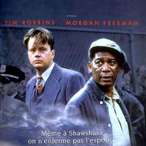

Vizyondaki Dizi
|
|
|
J.R.R. Tolkien'in romanlarından esinlenen Yüzüklerin
Efendisi: Güç Yüzükleri, Orta Dünya'nın İkinci Çağı'na
odaklanıyor ve Hobbit veya Yüzüklerin Efendisi
filmlerinden binlerce yıl öncesinde yaşananlara
odaklanıyor. Göreceli bir barış döneminden başlanan
dizide, Dumanlı Dağlar'ın en karanlık derinliklerinden
Lindon'un görkemli ormanlarına, ada krallığı
Numenor'dan, haritanın en uzak noktalarına kadar tüm bu
diyarların ve karakterlerin yarattığı destan
anlatılıyor.
|
|
|
Popüler Filmler
|
|

|
Esaretin Bedeli, Andy ve Red isimli iki mahkumun
parmaklıklar ardında kurdukları dünyanın hikayesini
anlatıyor. Andy Dufresne, genç ve başarılı bir
bankerdir. Karısını ve karısının sevgilisini öldürmek
suçundan yargılanır ve ömür boyu hapis cezası alır.
Shawsank Hapishanesi'nde dayak, işkence, tecavüz, her
türlü durum yaşanmaktadır fakat Andy gene de hayata
bağlı ve iyimserdir. Bu tutumu etrafındakileri de
etkiler. Andy umutlu bakış açısıyla çevresindeki tüm
mahkumları, parmaklıklar arkasında bile özgür bir yaşam
olabileceğine inandırır. Andy'nin bu çabalarına ortak
olacak bir arkadaşı da olacaktır: Red.Bir Stephen King
uyarlaması olan filmde Morgan Freeman ve Tim Robbins
başrolde. Film, 1995'te, aralarında en iyi film adaylığı
da olmak üzere tam 7 dalda Oscar'a aday gösterildi.
|
|

|
Yeşil Yol, bir hapishane görevlisi ile bir mahkumun
öyküsünü anlatıyor. Paul Edgecomb'un hapishanedeki
görevi, idama mahkum edilen mahkumları son
yolculuklarına uğurlamaktır. Çalıştığı yıllar içerisinde
yüzlerce mahkumu idam etmiştir. Bir gün John Coffey
isimli korkutucu görünümlü bir adamla tanışır. Ancak
Coffey'in bu ürkütücü görünümünün altında oldukça saf
bir ruh yatmaktadır. Coffey, iki küçük kız çocuğunun
katil davasında yargılanmaktadır. Coffey'in günden güne
gün yüzüne çıkan dünya ötesi güçleri, karakteri hakkında
yeni ipuçlarını anbean ortaya çıkaracaktır.
|
|
|
Sağ Taraf
|